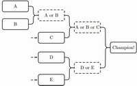

BZPRO
#5199. [NWERC2017]Knockout Tournament
内存限制：512 MiB
时间限制：10 Sec
提交
提交记录
讨论
题目描述
n个选手打淘汰赛，当n是2的幂的时候，比赛过程可以如下递归描述：选手被分成等大小的两组，每组分别决出冠
军，然后两个冠军再进行一次比赛，每一个输的选手都会被淘汰出局。当n不是2的幂的时候，后面的一些选手在第
一轮中就不会被安排比赛，所以第二轮比赛中剩余选手数一定是2的幂。

每个选手都有一个力量值r_i，当A对决B时，A的胜率为r_A/(r_A+r_B)，B的胜率同理。
你是1号选手，且你可以安排所有选手第一次的对决情况，请找到一种方式使得你夺冠的概率最大。
输入格式
第一行包含一个正整数n(2<=n<=4096)，表示选手总数。
第二行包含n个正整数r_1,r_2,...,r_n(1<=r_i<=100000)，分别表示每个选手的力量值。
输出格式
输出一行一个实数，即最大的胜率，绝对或相对误差小于10^{-6}将被接受。
样例
样例输入
4
3
1
2
4
样例输出
0.364285714
数据范围与提示